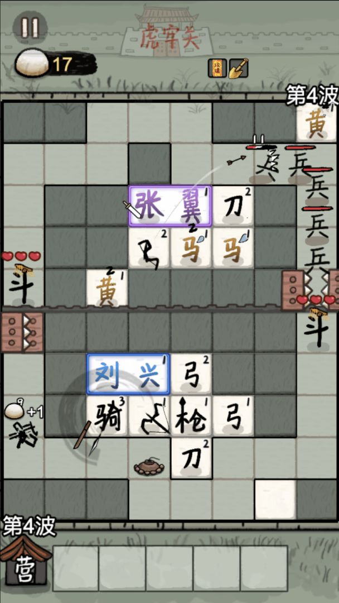

A · 抽象借鉴＋自有原创
保留“看得懂的单位 + 有后果的合成 + 自动战斗”，用原创世界观、棋子规则与局内目标。
- 先做单人固定关卡，排除匹配噪声
- 只验证1种核心合成与1个取舍
- 让玩家能说清“我为何赢/输”
优点：验证核心体验最快
风险：如果只是换皮，独特性不足；需要规则层面的原创差异。

DataEye×引力引擎月榜给出平均排名1.9。它支持持续靠前的榜位，不支持“利润第一”或“留存已验证”。
观察与操作分区、征兵与合成、自动战斗构成短决策循环。不能把本作讲成赵云走位护送阿斗的动作游戏。
借鉴“看懂→决策→反馈”的可读性；原创品牌命名、具体美术、代码和音频需自有或获许可。商业成败另测。
同一平台的“畅销”“畅玩”“人气/热门”回答不同问题。每次选择只展示同一来源、同一日期、同一口径的完整Top 10。
| 排名 | 游戏 | 月平均排名 |
|---|---|---|
| 1 | 羊了个羊：星球 | 1.1 |
| 2 | 赵云与阿斗 | 1.9 |
| 3 | 一箭又一箭 | 3.4 |
| 4 | 抓大鹅 | 3.8 |
| 5 | 解压打毛线 | 5.9 |
| 6 | 解压闯一关 | 7.1 |
| 7 | 打个螺丝 | 7.6 |
| 8 | 猪了个猪 | 10.0 |
| 9 | 挪了下车 | 11.3 |
| 10 | 一找一个准 | 12.0 |
证据9月微信畅玩月榜第2，日排名均值1.9，说明在这一特定榜中并非只有单日冲高。10月12日MomoRank辅助快照记录微信畅玩第2、抖音热门第4。
推断它更适合被当作“轻操作、广告导向小游戏”的样本。不能因为不在畅销Top 10，就推断收入低；也不能凭畅玩排名估算广告流水。
未知未找到可完整核验的9月抖音热门Top 10，所以该组合显示缺项。不会拿8月替代9月，也不把不同机构的月榜拼在一起。
“头部”在本报告仅指所列榜单的前十，不代表全市场装机量、用户口碑或净利润。TapTap关注与评分仅是社区截面，不是DAU/MAU。
主体身份、机制相近、素材授权和商业上线是四个不同问题。下面是六个可辨认的研究节点，不是六款已认证的独立发行游戏。
官方入驻TapTap详情与厂商作品列表交叉确认主体。行业报道采用6月4日上线口径，TapTap显示6月5日；6月3日宣传仅为搜索摘要线索，账号认证未核；宣传日、收录日和首发日不能混为一谈。
当前直接页：1.0.59(5)，更新日2026年10月9日。搜索缓存中的1.0.9是旧信息。
官方入驻详情 ↗国区App Store供应商为Beijing Mihuan Games Technology Co., Ltd；版本历史最早显示6月24日1.0。页面没有标明这一条历史记录的年份，年份未核，不作为绝对首发证据。
各端版本号、发布节奏和包体可以不同。不能仅凭下载站版本/大小差异认定“盗版”或独立分支。
国区App Store ↗官方厂商作品列表确认关联。DataEye报道其微信8月14日起投放、抖音8月19日起投放；投放开始不等于首次上线。
可称同厂题材衍生与机制迭代。行业文章所说“2.0”是分析称谓，不是《赵云与阿斗》的官方版本号。
同厂新作详情 ↗作者明确称复刻，展示Cocos Creator开发预览，目标为微信小游戏。第三方素材只供学习演示，项目不提供素材授权。
公开教程证明技术尝试存在，不能证明商业上线、完整功能或可以合法直接商用。开发预览不等于微信实机验收。
可确认存在相关标题宣传，但实际修改者、包内容、授权与可用性未证。本报告不提供修改包或下载入口，也不据宣传判断联机、免广告、全解锁真实存在。
这只是生态边缘的一类传播证据，不进入正式竞品功能对比。
访谈自述2026年6月26日，CEO李眉宇在罗斯基采访中称研发超过一年，常规投入约3–4人、前后参与5–6人；思路来自《墨战》的文字表达，叠加三国题材与塔防成长，并参考后简化Random Dice框架。它说明经验积累与迭代，不代表素材、代码或版权继承。
罗斯基CEO采访 · 2026-06-26；采访是当事人陈述，研发成本与团队工时未独立审计。
以下是官方发布截图，点击可放大。不是本研究试玩录屏；截图版本、拍摄终端和原始拍摄日期未披露，统一采集于2026年10月12日。
图片来源：蜜獾工坊官方入驻TapTap产品页。版权属于原权利人；仅用作机制评论与识别，未将其作为原创游戏资产。
① 招募：棋盘出现可识别的单位。
招募 / 征兵：有限资源和棋盘空间将玩家带入下一次选择。
合成 / 调整：同类或符合规则的棋子进入合成决策，改变战力和布局；具体组合以游戏内规则为准。
自动战斗：上方/对应战区把构筑结果转为弹道、清怪与目标压力，操作与观察形成闭环。
继续或失败：技能、商店、资源与难度引出下一步构筑；心数让失败压力可见。
官方演示取帧官方产品页视频ID 5698027中，82秒可见“马”“超”字牌，84秒出现合成后的“马超”。这把题材、收集目标和操作反馈串在一起：名字不是角色头顶的一行说明，而是玩家要补齐的配方。
来源：TapTap官方产品页内演示视频；仅选取支撑评论的三个画面。260.71秒是这段视频的长度，不是已验证的平均对局时长。没有重新分发整段视频。
设计推断有限格子同时承载战力和待合成碎片。立刻摆能攻击的单位可以渡过当前压力；保留一个暂时弱的字牌，则是在购买未来配方的机会。空间、资源与概率才是合成产生策略的条件。
若某套经济加成和少数武将成为唯一有效答案，选择再多也会趋向机械化。应测试不同路线是否都能成立，以及失败后玩家是否会改变策略。
画面证据100秒画面存在带视频图标的“铲子×2”入口，支持该演示版本有视频奖励扩地节点。没有点开广告，因此时长、频率、拒绝成本和转化均未知。
产品建议先让无广告基础局公平可玩，再测可选奖励。联看广告前退出、看后继续和回访，不能只最大化广告次数。
机制能解释“为什么可能有效”，榜位能证明“某个榜上靠前”。两者之间仍缺用户行为、投放和留存数据的因果验证。
“弓”“盾”等符号降低识别负担。文字变成兵器后，画面具有便于描述的反差：一眼看出异常，又能迅速理解大意。
支持官方画面与CEO访谈均支持文字表达路线；部分玩家评论肯定文字变兵器的创意。
汉字低成本不等于制作低成本；动效、数值、关卡和可读性仍需打磨。密集文字也可能压缩新手识别与无障碍体验。
测：首次观看5秒后能否说清操作和目标，并与图标版做盲测。
招募、合成是可离散化的选择；自动战斗在间隙持续产出可见结果。适合碎片时间，也给录屏保留“做一次选择、发生一串变化”的素材。
支持官方画面展示棋盘操作区与战斗区；短循环解释属于设计推断。
可观看不等于会分享；反馈多不等于玩家理解因果。弹道过密或随机结果过强，会让玩家觉得努力没有作用。
测：失败后能否准确归因，以及再次开局的主动意愿。
赵云与阿斗的关系自带保护任务语义；名将、兵器与汉字组合，使抽象数字成长有可讲述的对象。同厂西游题材迭代延续相似策略。
支持官方产品身份与同厂作品关联已确认；题材对转化的提升幅度未知。
题材熟悉度不是天然流量保证。近名游戏和复刻的存在不证明其获得同样分发、口碑或收益。
测：用同机制、不同原创包装比较理解率，而非只比点击率。
不确定性与局内构筑可制造再开一局的理由；每日/赛季重置可形成回访节点。玩家评论同时出现重置、卡顿和挫败的不满。
未知没有本作D1/D7留存、重置A/B实验或匹配机制后台数据。
不能把“人机”“控胜率”“动态难度”等玩家感受写成已证实算法，也不能凭上下双区证明实时真人PVP。
测：透明随机、可预期保底和固定关卡基线，比较归因、公平感与重玩。
待验证直播、达人、投放、先发窗口和平台推荐，都可能共同影响榜位。原团队的前作经验与已有发行资源，外来复刻者不会自动继承。买量本身不是“假火”，关键是回收与成本。
按入口和素材跟踪转化与成熟队列留存，才能区分“好看但不想玩”和“进入后留下”。没有归因数据，既不能说全靠买量，也不能说零买量自然爆红。
以下是原创产品实验建议，不是对已有私有工程的审计，也不承诺复制商业成功。最小版本应少到能看清玩家为什么留下或离开。
保留“看得懂的单位 + 有后果的合成 + 自动战斗”，用原创世界观、棋子规则与局内目标。
优点：验证核心体验最快
风险：如果只是换皮，独特性不足；需要规则层面的原创差异。
获得适用授权后，围绕现有品牌做获准的新内容或渠道版本。先验证权益、合作条件和分发，而非仅谈换题材。
优点：有机会承接已有认知与分发
风险：授权费、审批与合作依赖；拿到授权不保证商业成功。
适合限定范围的学习验证，不能把能运行的教学预览当作可上线、可分发、可盈利产品。
问题：学到了实现，未必学到价值
公开教程自己的素材免责声明，已经说明商用许可不能假定。
下面是本报告新提出的工作名与规则草案，尚未测试。不是原作的隐藏模式，也不是已有商业项目。
原创水乡里，护卫一盏沿分岔水道前行的灯船。风、帆、桥、堤分别改变速度、路线与阻截条件。核心取舍是提前布防还是留资源救急。
最小样例：一张分岔地图、两条可行路线。若移动只增加忙乱而没有形成新决策，停止扩充。
守护残字册，组合改变攻击功能，而不只是升星；允许拆解返还，让临场换功能成为主动作。采用架空字灵规则，不把虚构配方讲成真实造字规律。
最小样例：有限组合库与合成预览。若只是猜字、没有战术差异，或组合规模失控，就收缩。
护卫城市幻想中的末班车。修、引、挡、照是不同岗位，每站选择冒险救更多乘客，或提前安全离开。车辆、时间与救援数量之间产生有代价的取舍。
最小样例：一条短路线和少量站点。若玩家只会选择唯一最大化答案，或多目标解释过重，不进入大规模制作。
如果主要优势是实机视频、直播与选题，可以先测真实导玩能力；这是内容业务，不是自有游戏的替代。若需要原品牌与角色表达，则先明确授权范围和渠道权益。
若观众爱看但不愿玩，先验证内容路线，不急着放大研发。
| 阶段 | 要建立的证据 | 推进或停止依据 |
|---|---|---|
| 0 · 约束 | 人周、现金、目标渠道、发行主体、可用素材与分发能力 | 先选一种业务；没有可承担试错的范围，就不扩建系统 |
| 1 · 可玩 | 目标用户独立理解、首局完成、失败归因、自愿再开 | 不能靠旁边解释完成；无重玩理由先改规则，不加角色 |
| 2 · 承接 | 按来源记录曝光→进入→可交互→完成→再开 | 分开测素材点击与游戏体验；随机化顺序，小样本不强行判胜 |
| 3 · 回访 | 同渠道新用户成熟队列；明确D1/D7自然日或滚动口径 | 观察窗未满不算D7；同时测广告前退出、公平感和回访 |
| 4 · 经济 | 同一观察窗的净结算，减可归属流量、素材、达人与运维成本 | 区分贡献利润与全成本利润；放量变差就重估，不线性外推 |
测试前由预算、回收期和现金续航反推阈值并记录。本报告不编造D1/D7/eCPM“及格线”。不把平台已扣分成再扣一次，不用尚未观察到的长尾收益承诺盈利。
独立记录代码、字体、音频、美术与插件的来源、许可证、商用范围、渠道与期限。开源代码不自动包含其中所有素材的商业授权；使用经典故事也不等于能拿现代游戏的具体造型与声音。
合规提示不是法律意见。著作权法与现行计算机软件保护条例区分具体表达与思想方法，但不构成“照搬玩法一定合法”的保证。抖音小游戏开发者协议与资质FAQ要求关注第三方权益和IP授权。微信当前规范本次未成功读取，正式上架前需从官方后台复核。
核查日2026年10月12日。公开来源只支持它明确展示的事实；本文用可见标签保留判断层级。
证据 / 自述可回到具体页面核对。推断由观察提出的解释或建议。未知公开资料不足，未据此下结论。